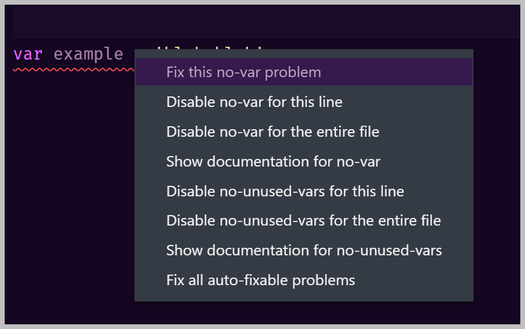

- NPM - package manager
- ESLint - code error checker
- Airbnb - code style guide
- Prettier - code formatter
Below you will find a description of each of these tools.
The NPM Universe

Illustration by WaterAndWine
Even though JavaScript code will run natively in the browser or by executing it with node, modern developers need a working understanding of how to make our way around the NPM universe.
The trick is to know that:
All roads lead to and from the package.json file.
Not only does package.json give instructions to npm on how a project gets tested and/or built, it is also meant to be readable (and editable) by developers to get a working project.
What is meant by the json extension
The phrase json (properly pronounced jay-sun, not jays-on) comes from JavaScript Object Notation. Douglas Crockford created the json file format in the early 2000s to store data in a simple human-readable format. While it was created for JavaScript, its usefulness and popularity have made it a standard file format for other languages and uses as well.
So, json is based on JavaScript objects but is not exactly the same. You can get a full discussion of the jason syntax at w3schools or at https://jsonapi.org/.
If you look at any package.json file, you'll see that everything is contained within a {} pair. Then you'll see that there are name/value pairs. A name/value pair consists of the property name (in double quotes), followed by a colon, followed by the value (in double quotes):
"test": "jest"Additionally, name/value pairs can be collected into groups using another set of {} and commas:
"scripts": {
"test": "jest",
"prepare": "husky install",
"pre-commit": "lint-staged"
},
The above snippet from a package.json file shows that the property named "scripts" is a list of commands that npm can run when asked. For complex projects, a package.json file may have a long list of scripts.
NOTE: The json datatype is also extremely important as the most common way for a server to serve data to a client using REST APIs.
What is code linting and eslint
Linting is the automated process of scanning and analyzing code looking for errors and non-adherence to best-practice standards.
Here is a list of positives when using a linter:
- find buggy code from syntax errors and typos
- highlight potential logical errors
- highlight dangerous (like using the eval function)
- flag non-adherence to coding style guide standards and conventions
- stop you from committing buggy code that will cause issues later
The npm package called eslint is currently the most popular linter for JavaScript. It is popular because of its flexibility and its wonderful documentation at https://eslint.org/.
Eslint runs from a configuration file
Eslint operates from an exhaustive set of rules that you can find at https://eslint.org/docs/rules/. These rules cover code practices that can be problematic.
Many of these rules can have situations where breaking the rule is not only permissible, but preferred.
For example, production code meant for the browser should normally not have console.log() statements in them. It is not considered best practice. You can find the no-console rule in the documentation at https://eslint.org/docs/rules/no-console
In other situations, like running a node app, console.log() is expected, which means that rule has to be turned off.
Choosing to define console.log() as an error or not is only one example. Each project will have its own do's and don'ts when it comes to writing good code.
For this reason, an eslint installation expects ways to configure it to help define what should be enforced and to what level of enforcement these rules should have.
The eslint configuration file
To put it simply, eslint is not easy to configure. Luckily, it does have a tool to help you get started.
When you run npx eslint --init from the command line, it will ask you questions and write a useable
configuration file from your answers. That makes a good starting point. https://eslint.org/docs/user-guide/configuring/
The configuration file will typically be in the root folder of your project. Unfortunately, the format of the file can differ depending on the developer's preferences. https://eslint.org/docs/user-guide/configuring/configuration-files#configuration-file-formats
The preference format for the eslint configuration file for this class is .eslintrc.json
Here is an example .eslintrc.json file
Open it up and take a look. You can tell it is probably for a node project because it turns off the no-console rule.
Eslint has a VS Code extension
You can combine eslint with its VS Code extension of the same name. https://marketplace.visualstudio.com/items?itemName=dbaeumer.vscode-eslint
NOTE: the extension needs the tool installed and configured before it will work.
The eslint extension takes eslint's configuration and applies it to the code when it is open inside your editor.
The squigglies and making them disappear
If the eslint extension finds a problem, it puts a colored squiggly line underneath anything that does not adhere to that long list of rules.
Red means the code is considered to be an error and yellow is a warning.
When you hover the mouse over a squiggly, the extension will tell you about one or more problems.
So, this example shows that using the var keyword is breaking the no-var rule that is currently set to "error". The suggestion is to use either let or const.
In fact, this one line of code has 2 errors, as we will see in the next screen shot.
In the hover pop-up, you are given two links. The first link "View Problem" will open up the rule into a larger popup.
The second link opens up a pull-down set of actions that you can take to make the red squiggly go away.

And, yes, best practice says you need to make each and every squiggly go away as soon as possible.
If at all possible, my go-to action is "Fix all auto-fixable..." or "Fix this..."
When I choose to fix this example, the var is automatically changed to a const.
That reveals my second error: example appears no other place in the code
and
is, therefore, unused. There is no quick fix for this. I have to now think why I have an unused variable and what
should be done about it.
Eslint comments to disable rules
NOTE: You should only disable rules when you know why you are doing disabling.
The above screen shot shows actions that start with the word "Disable". These actions, if chosen, will automatically place an eslint comment that disables the rule.
Remember, if you need to disable (turn off) a rule for a whole project, you should put that into the .eslintrc.json file.
If you need to disable a rule per file, the comment goes at the top of the file.
If you want eslint to ignore a rule for only one line of code, the comment can go right before the line.
These eslint comments are super because, not only do they inform the eslint tool, they also inform other coders as to what assumptions have been made.
What are code style guides and Airbnb
A style guide is a set of standards adopted by an organization to standardize the development of a product and reduce inconsistencies. In web development you can have design style guides where the organization has dictated properties like allowable color, typography, buttons, etc.
You can also have coding style guides that dictate how code is written. The most popular JavaScript style guide is the one created and maintained by Airbnb, https://github.com/airbnb/javascript. This style guide is remarkably well-written and reading their rules can help one learn JavaScript. For each rule there is a discussion of why followed by both bad and good examples.
What are code formatters and Prettier
Let's say different lines of your code have extra spaces inserted here and there and in other places you haven't necessarily used spaces. The JavaScript engine ignores extra whitespace, so this is not a code error.
These lines could be a problem if you have adopted a style guide where allowable spaces are defined. You could go over over each line fixing these problems manually. But, oh, what a pain.
Welcome code formatters. Just like linters automatically check code for errors, formatters automatically fix code for violations to a style guide.
Prettier, which has a VS Code extension, has become the most popular formatter. You can configure Prettier to work as you type, as you save a file, and before you commit changes to your repo. A common choice is to select "Format on save" in your VS Code settings.